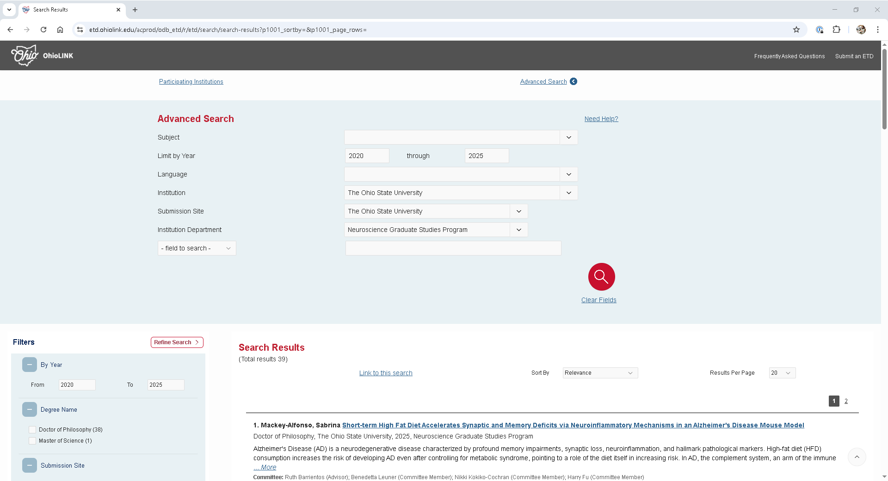
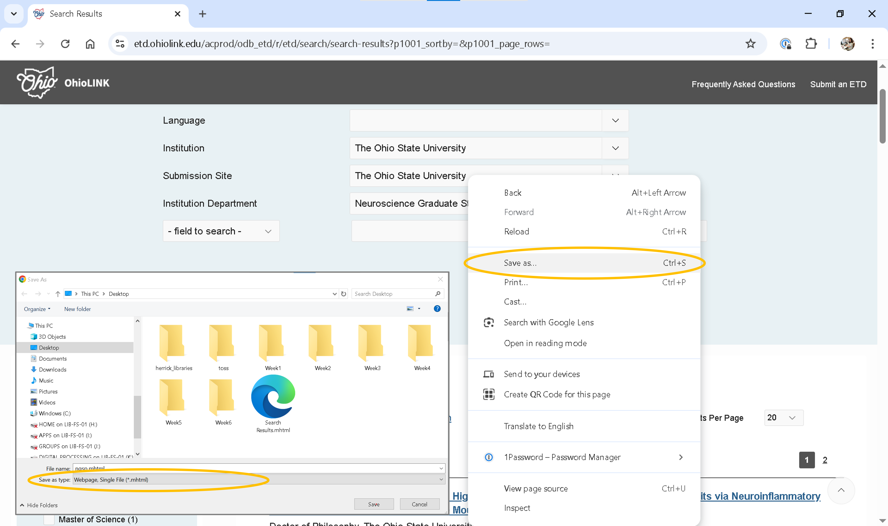

<div class="t-SearchResults-content">
<h3 class="t-SearchResults-title">
1. <span class="t-SearchResults-author">Mackey-Alfonso, Sabrina</span>
<a href="/acprod/odb_etd/r/etd/search/10?p10_accession_num=osu1744894008278402&clear=10&session=10473290292427">Short-term High Fat Diet Accelerates Synaptic and Memory Deficits via Neuroinflammatory Mechanisms in an Alzheimer's Disease Mouse Model</a>
</h3>
<div class="t-SearchResults-info">
<p class="t-SearchResults-degree">
Doctor of Philosophy, The Ohio State University, 2025, Neuroscience Graduate Studies Program
</p>
<p class="t-SearchResults-desc hide-class"><div style="overflow: hidden; height: 40px;">Alzheimer's Disease (AD) is a neurodegenerative disease characterized by profound memory impairments, synaptic loss, neuroinflammation, and hallmark pathological markers. High-fat diet (HFD) consumption increases the risk of developing AD even after controlling for metabolic syndrome, pointing to a role of the diet itself in increasing risk. In AD, the complement system, an arm of the immune system which normally tags redundant or damaged synapses for pruning, becomes pathologically overactivated leading to tagging of healthy synapses. While the unhealthy diet to AD link is strong, the underlying mechanisms are not well understood in part due to confounding variables associated with long-term HFD which can independently influence the brain. Therefore, we experimented with a short-term diet regimen to isolate the diet's impact on brain function without causing changes in metabolic markers.
This project investigated potential mechanisms underlying cognitive impairments evoked by short-term diet consumption using the 3xTg-AD model. In chapter 1 we discuss the link between HFD and AD and outline the current findings and hypothesis regarding of relevant mechanisms. In chapter 2 we characterize the effect of short-term HFD on 1) memory, 2) neuroinflammation including complement, 3) AD pathology markers, 4) synaptic markers, and 5) in vitro microglial synaptic phagocytosis in the 3xTg-AD mouse model. In chapter 3 we analyze two potential mechanisms underlying HFD-mediated AD vulnerability: toll-like receptor 4 (TLR4)-evoked neuroinflammation and complement system activation. Finally, in chapter 4 we validate the absence of glucose modifications as an effect of the diet and drug treatment, explore potential mitochondrial mechanisms in the hippocampus, and evaluate the diet's impact on the pre-frontal cortex (PFC).
Following the consumption of either standard chow or HFD, 3xTg-AD mice exhibited impaired long-term memory performance which was associated with increased level (open full item for complete abstract)</div> <a href="#" data-ctrl="" class="">... <em>More</em></a></p>
<span class="t-SearchResults-misc"><b>Committee:</b> Ruth Barrientos (Advisor); Benedetta Leuner (Committee Member); Nikki Kokiko-Cochran (Committee Member); Harry Fu (Committee Member)</span>
<span class="t-SearchResults-misc"><b>Subjects:</b> Neurosciences</span>
<!-- span class="t-SearchResults-misc">Score: 100</span -->
</div>
</div>Lesson 6. OhioLINK ETD
The OhioLINK Electronic Theses and Dissertations (ETD) Center provides access to abstracts and full-text PDFs of theses and dissertations submitted by participating Ohio colleges and universities. Users can perform basic searches by title, author, or keyword, or use advanced search to filter by subject, year, language, institution, ORCID iD, committee members, topic keywords, and full-text content.
For prospective PhD students, the ETD Center is a valuable resource to: - Explore research aligned with their interests - Identify academic programs that fit their goals - Discover potential advisors or committee members by reviewing recent dissertations
Data skills | concepts
- Web scraping
- Dynamic vs. static HTML
Learning objectives
- Understand the difference between dynamic and static HTML
- Develop strategies and approaches to gather dynamic HTML content.
This tutorial is designed to support multi-session workshops hosted by The Ohio State University Libraries Research Commons. It assumes you already have a basic understanding of Python, including how to iterate through lists and dictionaries to extract data using a for loop. To learn basic Python concepts visit the Python - Mastering the Basics tutorial.
Important!
Remember to examine copyright and terms of use before starting any web scraping project.
LESSON 6
When exploring the OhioLINK Electronic Theses and Dissertations Center, you may notice that it lacks built-in features to print, email, save, or export search results to citation managers or other tools. While the ETD Center Consumer Guide provides documentation for accessing data via an API, this approach can be move complex than necessary, especially if your goal is simply to retrieve metadata for a specific department within a defined time frame.
Search for theses and dissertations submitted after 2020 from a specific department at The Ohio State University using the OhioLINK ETD Advanced Search:
- Go to the OhioLINK ETD Advanced Search page.
- Leave the Subject field blank.
- In the Institution menu, select The Ohio State University.
- Under Submission Site, select The Ohio State University again.
- A new field labeled Institution Department will appear. This dropdown lists the actual dissertation program names used by the university, which is especially helpful for locating work from interdisciplinary or uniquely named departments. Select the department you’re interested in.
- Set the Year filter to 2021 or later to limit results to recent submissions.
-
Run the search and examine the URL structure in your browser’s address bar. Consider:
- How are the search parameters encoded?
- How does this URL differ from others you’ve used in web scraping or automation?

A search for theses and dissertations submitted after 2020 by students in The Ohio State University’s Neuroscience Graduate Studies Program returns records, with 20 results displayed per page. Notably, the search URL does not include visible parameters or filters, and it remains unchanged even when navigating to subsequent pages—suggesting that the site uses JavaScript to manage pagination and query state dynamically.
https://etd.ohiolink.edu/acprod/odb_etd/r/etd/search/search-results?p1001_advanced=1&clear=0,1001
Handling dynamic content
The Electronic Theses and Dissertations Center is a dynamic website. While the page layout, such as headers, footers, and overall structure, is built with static HTML, the search results are loaded dynamically via JavaScript after the initial page load. If you inspect the page using browser Developer Tools, you’ll find that search results are inserted into the element <t-SearchResults-content>:
Example:
This setup allows the site to update content without reloading the entire page.
⚠️ Why requests and BeautifulSoup Alone Won’t Work
If you try to scrape the page using requests and BeautifulSoup, you’ll notice that the response only contains the static HTML shell—none of the dynamically loaded search results are included. That’s because the content is rendered by JavaScript, which requests cannot execute.
🛠️ Workaround for Small-Scale Projects
If you’re working on a small project and just need to extract a limited number of results, you can manually save the page and parse it locally:
✅ Steps:
- Set Results Per Page to 100 to minimize the number of pages you need to save.
- Right-click on the results per page and choose Save As.
- Select **Webpage, Single File (*.mhtml)** as the format.
- Open the saved
.mhtmlfile using Notepad or any other plain text editor. - Delete everything above the
<!DOCTYPE html>line. - Save the file again, changing the extension from
.mhtmlto.html.
Once saved as a .html file, you can read and parse it using BeautifulSoup.
Save your results from Exercise 1 by following the steps listed above.

Use BeautifulSoup to extract the following elements from your saved HTML file:
- title
- author
- degree
- degre_year
- advisor
- committee_members
- subjects
Remember to read the HTML` file into Python first. Export the results to a CSV file.
from bs4 import BeautifulSoup
import pandas as pd
results=pd.DataFrame()
contents = open('data/results.html').read()
soup = BeautifulSoup(contents, 'html.parser')
etds = soup.find_all(attrs={"class":'3D"t-SearchResults-content"'})
for each_etd in etds:
row={}
title=each_etd.find("h3").find("a").text.replace('=\n','').replace('=',' ')
row['title']=title
author=each_etd.find('span', {"class":'3D"t-SearchResults-author"'}).text.replace('=\n','').split('\n')[0]
row['author']=author
degree=each_etd.find('p', {"class":'3D"t-SearchResults-degree"'}).text.split(',')[0].strip()
row['degree']=degree
degree_year=each_etd.find('p', {"class":'3D"t-SearchResults-degree"'}).text.split(',')[2].strip()
row['degree_year']=degree_year
misc_results=author=each_etd.find_all('span', {"class":'3D"t-SearchResults-misc"'})
advisors=[]
committee=[]
subjects=[]
for misc in misc_results:
if "Committee:" in misc.text:
members=misc.text.replace('=\n','').replace("Committee: ","").split(';')
for member in members:
if "advisor" in member.lower():
advisors.append(member.split('(')[0].replace('=\n','').strip())
committee.append(member.split('(')[0].replace('=\n','').strip())
else:
committee.append(member.split('(')[0].strip())
elif "Subjects:" in misc.text:
subjs=misc.text.replace('=\n','').replace("Subjects: ","").split(';')
for subject in subjs:
subjects.append(subject.strip())
advisors=(';').join(advisors).rstrip(';')
row['advisors']=advisors
committee=(';').join(committee).rstrip(';')
row['committee']=committee
subjects=(';').join(subjects).rstrip(';')
row['subjects']=subjects
df_row=pd.DataFrame(row, index=[0])
results=pd.concat([df_row, results], axis=0, ignore_index=True)
results.to_csv('data/npsg.csv')For larger projects, consider using tools such as Requests-HTML or Selenium, which are capable of rendering JavaScript—making them ideal for scraping dynamic web content that standard libraries like requests and BeautifulSoup can’t access.